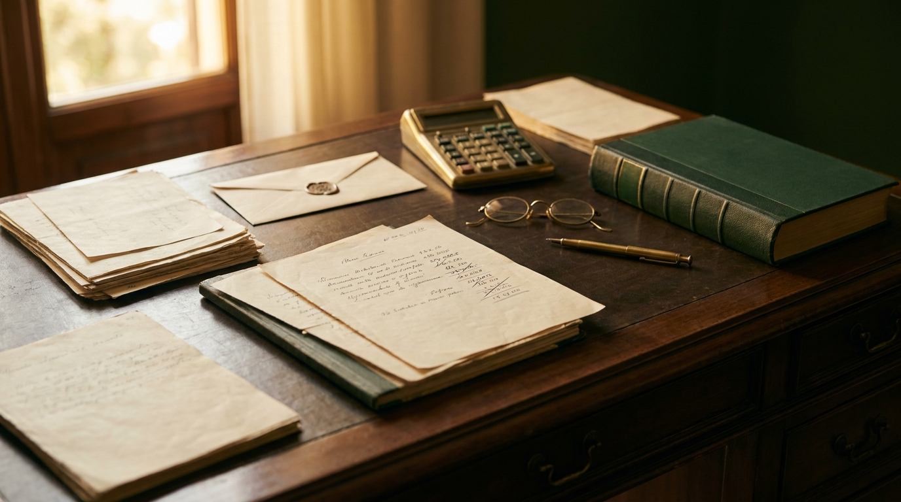

Errori nelle offerte commerciali: quando il licenziamento è legittimo
Sbagliare ripetutamente nella predisposizione di offerte commerciali può costare il posto di lavoro. La giurisprudenza di legittimità ammette il licenziamento quando gli errori, in mansioni di responsabilità, integrano un inadempimento grave e provato. Ma la sola prestazione difettosa non basta: occorre un nucleo di colpa, danno e proporzionalità che il datore deve dimostrare in modo oggettivo e specifico.

Il caso e la cornice giurisprudenziale
Un dipendente con funzioni di responsabilità — ad esempio un responsabile di mercato — commette errori ripetuti nella gestione delle offerte commerciali, con conseguente danno per l'azienda. È sufficiente per licenziarlo?
La giurisprudenza di legittimità ha affrontato più volte il tema, riconoscendo che il licenziamento può essere legittimo quando l'errore non è episodico, ma sistematico, e incide su mansioni che richiedono un grado elevato di affidabilità. Resta però fermo un principio: la prova deve essere oggettiva, documentata e riferita a fatti specifici. Non basta la generica insoddisfazione del datore.
Inadempimento contrattuale, non semplice prestazione difettosa
La chiave interpretativa è la distinzione tra una prestazione semplicemente imperfetta e un vero inadempimento contrattuale.
L'art. 2104 del Codice civile impone al lavoratore una diligenza commisurata alla natura della prestazione e all'interesse dell'impresa. Più la mansione è qualificata, più alto è lo standard di diligenza esigibile. Un errore che sarebbe tollerabile in un ruolo esecutivo può integrare colpa rilevante in chi gestisce in autonomia le offerte ai clienti.
L'errore ripetuto va quindi collocato nel quadro dell'inesatto adempimento: l'art. 1218 c.c. addossa al debitore — qui il lavoratore — la responsabilità per la prestazione non esatta, salvo prova dell'impossibilità non imputabile. Ma sul piano disciplinare l'onere si ribalta: è il datore di lavoro a dover dimostrare il fatto, la sua imputabilità e la sua gravità. Il cosiddetto "scarso rendimento" non si presume mai dal mancato raggiungimento di un risultato: deve emergere da un divario significativo e ingiustificato rispetto allo standard esigibile.
Giustificato motivo soggettivo e giusta causa
Gli errori professionali rilevano, di regola, sul terreno del giustificato motivo soggettivo: l'art. 3 della Legge n. 604/1966 lo definisce come "notevole inadempimento degli obblighi contrattuali del prestatore di lavoro". Si tratta di un inadempimento grave, ma compatibile con il preavviso.
Diverso e più severo è il piano della giusta causa ex art. 2119 c.c., che consente il recesso immediato quando l'inadempimento è così grave da non consentire la prosecuzione, nemmeno provvisoria, del rapporto. La distinzione non è formale: incide sull'intensità della colpa richiesta e sulle conseguenze del recesso. Errori ripetuti ma non dolosi tendono a collocarsi nell'area del giustificato motivo soggettivo; solo condotte particolarmente lesive del vincolo fiduciario possono integrare la giusta causa.
Implicazioni pratiche per le aziende
Per il datore di lavoro che intenda contestare errori professionali, il rischio principale è la genericità. Un addebito formulato in modo vago, privo di riferimenti a fatti datati e documentati, è facilmente annullabile in giudizio.
Serve inoltre attenzione alla proporzionalità: la sanzione espulsiva deve essere coerente con la gravità complessiva della condotta, valutata anche alla luce dei precedenti disciplinari e del danno effettivamente prodotto.
Cosa fare in concreto
- Documentate ogni errore con riferimenti precisi: data, contenuto, conseguenze economiche o commerciali. La contestazione generica è il primo motivo di soccombenza.
- Rispettate la procedura dell'art. 7 dello Statuto dei lavoratori: contestazione specifica e tempestiva, termine a difesa, audizione su richiesta del lavoratore.
- Quantificate il danno in modo verificabile, distinguendo l'errore dal mancato risultato commerciale, che dipende da fattori molteplici.
- Valutate la proporzionalità tra la condotta e la sanzione, considerando recidiva, gravità e standard di diligenza esigibile dalla mansione.
Una valutazione caso per caso
Il punto di equilibrio resta delicato. Da un lato vi è l'interesse organizzativo dell'impresa a poter contare su prestazioni affidabili in ruoli sensibili; dall'altro, la tutela della stabilità del rapporto, che impedisce di trasformare ogni errore in motivo di recesso.
La legittimità del licenziamento non discende dall'errore in sé, ma dalla sua gravità, dalla sua reiterazione e dalla solidità della prova. La valutazione di legittimità dipende dai fatti concreti e dalla loro dimostrazione in giudizio.
Disclaimer
Contributo informativo a cura di Tamburro & Partners Avvocati — Avv. Giuseppe Tamburro. Non costituisce parere legale.
Ogni storia di lavoro ha i suoi tempi.
Se gestisci HR e vuoi un confronto su contenzioso, ispezioni o licenziamenti, scrivi allo studio. Ti rispondiamo entro un giorno lavorativo.